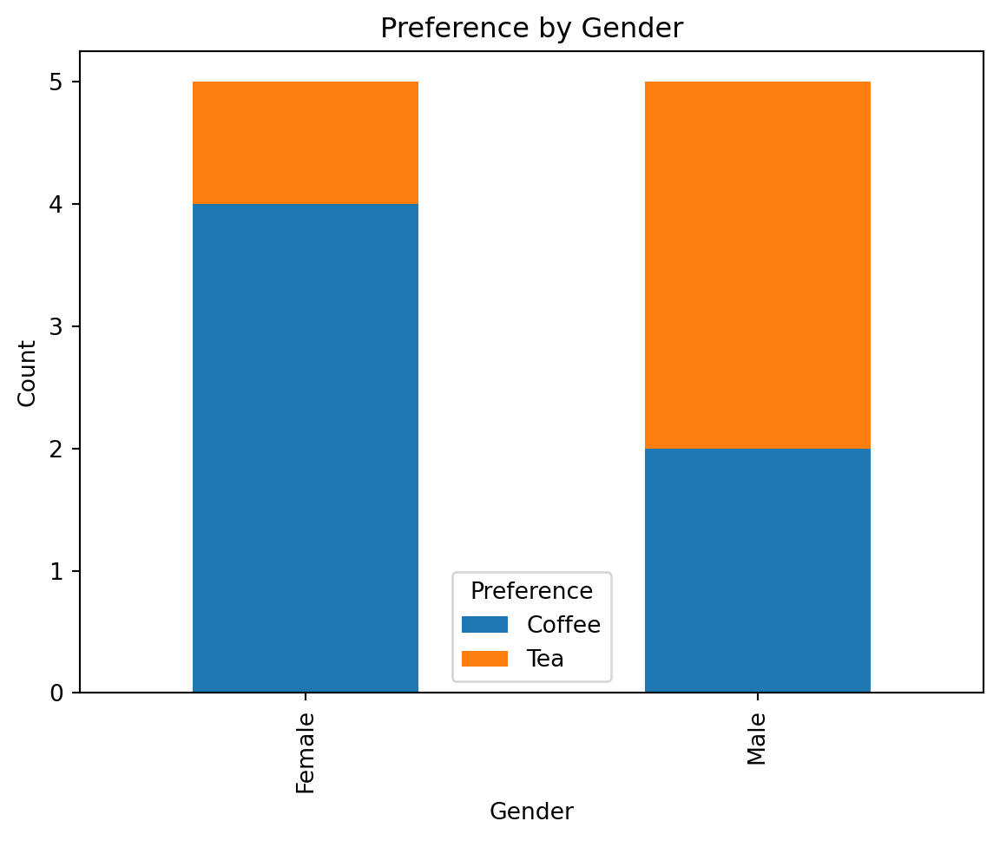

import pandas as pd
import numpy as np
from scipy.stats import chi2_contingency
import matplotlib.pyplot as plt
from scipy.stats import chi29 Hypothesis testing II
The main goal of this case is to learn how to detect relationships between categorical variables. By the end of this case, you should have learned how to use contingency tables to explore and design hypotheses of possible dependencies between the categorical features of your data. In addition, you should have learned how to conduct a \(\chi^2\)-test (Chi-square test) to examine the dependences in the categories you previously hypothesized.
9.1 Preliminary modules
9.2 Contingency tables
9.2.1 What are contingency tables
Contingency tables can be used to investigate relationships between two categorical variables. A contingency table counts the number of times each pair of categories (one from each of the considered variables) occured together in the dataset. Given that the counts are not normalized - that is, the scale depends on the total number of observations - we may wish to normalize the counts by \(1/n\) and report proportions. Medium to large variations in column or row counts/proportions indicate that there is a relationship between the two categorical variables in the table.
9.2.2 Creating contingency tables in Python
The function pd.crosstab() can be used to make a contingency table.
Syntax:
contingency_table = pd.crosstab(series 1, series 2)Example:
# Sample data
data = pd.DataFrame({
'Gender': ['Male', 'Female', 'Female', 'Male', 'Female', 'Male', 'Male', 'Female', 'Female', 'Male'],
'Preference': ['Tea', 'Coffee', 'Coffee', 'Tea', 'Coffee', 'Coffee', 'Tea', 'Tea', 'Coffee', 'Coffee']
})
# Create the contingency table of gender and preference
contingency_table = pd.crosstab(data['Gender'], data['Preference'])
# Print the contingency table
print(contingency_table)
print(contingency_table/len(data.index))Preference Coffee Tea
Gender
Female 4 1
Male 2 3
Preference Coffee Tea
Gender
Female 0.4 0.1
Male 0.2 0.3In this example: - data is a DataFrame containing the sample data. - pd.crosstab(data['Gender'], data['Preference']) creates the contingency table, showing the frequency of each combination of Gender and Preference.
We see that 40% of the females enjoy coffee over tea, compared to that of 20% of the males. In this case, the distribution is non-uniform.
9.2.3 Stacked barplots
A stacked bar plot is a type of bar chart used to visualize the relationship between two categorical variables. The \(x\)-axis displays each category of one of the categorical variables. There is one bar for each category displayed on the \(x\)-axis. Each bar in a stacked bar plot represents one category on the \(x\)-axis, and segments within the bar represent the proportion of observations attributed to each of the categories in the categorical variable not displayed on the \(x\)-axis. If the bars look similar accross the categories, this indicates no relationship between the two categories. On the other hand, bars that differ indicate a relationship between the two displayed categorical variables.
In Python, we make a stacked barplot using a contingency table. The syntax is given by:
Cont_table.plot(kind='bar', stacked = True)where Cont_table is a contingency table for the two categorical variables.
Toy example:
# Create the contingency table
contingency_table = pd.crosstab(data['Gender'], data['Preference'])
# Plot the stacked bar plot
contingency_table.plot(kind='bar', stacked=True)
# Add labels and title
plt.xlabel('Gender')
plt.ylabel('Count')
plt.title('Preference by Gender')
plt.legend(title='Preference')
# Show the plot
plt.show()
The larger orange bars for the male category indicate that a higher proportion of males in the data set preferred tea over coffee than females in the data set.
9.3 Chi-squared tests
If we observe in the stacked barplots and contingency table that there is a relationship between two categorical variables, then we may wish to rule out sampling variability. For instance, how nonuniform does the stacked bar chart have to be for us to conclude there is a relationship between the two variables? There are many different ways to perform the test but we will focus on the most widely used test: the Chi-square test (\(\chi^2\)-test). The hypotheses for the Chi-square test is:
\[ H_0:\text{Variable A is independent of Variable B} \] vs. \[ H_a:\text{Variable A is not independent of Variable B}. \]
Intuitively, “independence between two variables” means that knowledge of one of the variables does not inform us about what the other variable might be. For instance, in the coffee and tea example, if beverage preference and gender are independent, then knowing someone’s gender will not help us with figuring out if they prefer coffee or tea. Another way to state it is that the distribution of values of one variable remains the same even as the value of the other variable changes (and vice versa).
Note
The different categories in a categorical variable are often referred to as levels.
To execute the test, we must first compute the proportions of each level of each category within the data. To do that, we can use Python’s value_counts().
# Number in each category
num_gen=data["Gender"].value_counts()
# Divide by total
prop_g=(num_gen/data["Gender"].count()).sort_index()
# Number in each category
num_p=data['Preference'].value_counts()
# Divide by total
prop_p=(num_p/data['Preference'].count()).sort_index()
n=data['Preference'].count()
print(n)
print(prop_g)
print(prop_p)10
Gender
Female 0.5
Male 0.5
Name: count, dtype: float64
Preference
Coffee 0.6
Tea 0.4
Name: count, dtype: float64Let’s go back to the contingency table. Each cell in the contingency table corresponds to one level from variable A and one from variable B.
print(contingency_table)Preference Coffee Tea
Gender
Female 4 1
Male 2 3In this case, each cell corresponds to one of either tea or coffee and one of either male or female. For instance, the upper left cell correponds to coffee and female. You will learn in your probability course that, under the null hypothesis, on average, each cell should contain roughly the number of samples, times the proportion of observations in the level from the row variable that correponds to that cell, times the proportion of observations in the level from the column variable that correponds to that cell. For instance, we expect the upper left cell to contain \[\text{number of total samples} \times \text{proportion of females}\times \text{proportion of those who prefer coffee}= 10\times0.5\times0.6=3.\]
g, p, dof, expctd = chi2_contingency(contingency_table)
print("p-value", p)p-value 0.5186050164287255In this case, we fail to reject the null hypothesis since the \(p\)-value is so high. This means that, the fact that the contingency table shows some non-uniform patters may be only a feature of this sample, and not of the population. It also may be that we do not have enough observations to rule out sampling variability. We cannot be certain.
9.4 Misc. Python functions from Case 9
- We can use
.sum(),.div()etc. to perform mathematical operations accross columns or rows in pandas. plt.legend()allows us to modify the legend in Python..transpose()swaps the rows and columns of a DataFrame..isin(interable)checks for each element in a series if it is in the given iterable.df.date_py.dt.dayofweekgives the day of the week of a datetime object.